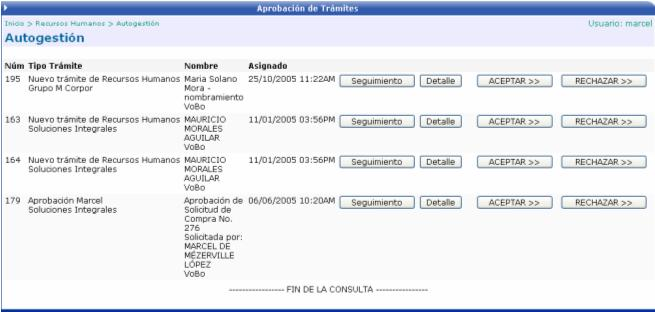
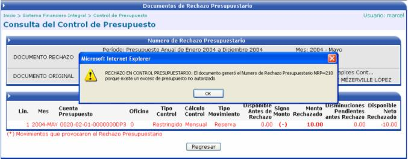
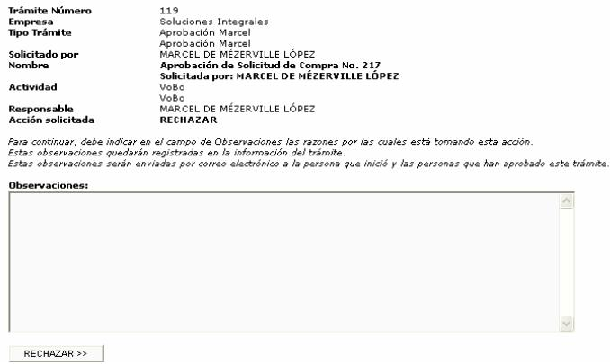

Aprobación de Trámites
En esta sección se presenta la lista de trámites pendientes en los que
el usuario es el responsable de aprobarlos o rechazarlos, es importante
mencionar que esta funcionalidad al igual que todo el sistema de Autogestión
es individualizado, lo que quiere decir que se visualiza solamente la
información correspondiente al empleado que esta ingresando o la información
correspondiente para esta opción de los trámites pendientes de ser autorizados
por la persona que consulta.

Si el usuario quiere aprobar un trámite
debe de presionar el botón . Si se presentará un rechazo
presupuestario (en caso de ser necesario), en el caso de un trámite de
compra, el sistema le desplegará un mensaje, indicándole que se ha generado
un rechazo de control de presupuesto. En caso de un trámite de acción
de personal se realiza la aprobación, rechazo o envío al siguiente paso
de autorización dependiendo de la cadena de trámite asociada a la acción
de personal que se esta procesando. La siguiente es la pantalla que se
despliega:
. Si se presentará un rechazo
presupuestario (en caso de ser necesario), en el caso de un trámite de
compra, el sistema le desplegará un mensaje, indicándole que se ha generado
un rechazo de control de presupuesto. En caso de un trámite de acción
de personal se realiza la aprobación, rechazo o envío al siguiente paso
de autorización dependiendo de la cadena de trámite asociada a la acción
de personal que se esta procesando. La siguiente es la pantalla que se
despliega:

Por el contrario si el usuario desea rechazar
un trámite, debe de presionar el botón  y se le presentará
una pantalla como la siguiente, donde el usuario deberá de digitar en
el campo de observaciones, una justificación de las razones por las cuales
esta tomando la decisión de rechazar el trámite. Dichas observaciones
quedarán registradas en la información del trámite y serán enviadas por
correo electrónico a la persona que inició y a las que han aprobado el
trámite hasta este punto.
y se le presentará
una pantalla como la siguiente, donde el usuario deberá de digitar en
el campo de observaciones, una justificación de las razones por las cuales
esta tomando la decisión de rechazar el trámite. Dichas observaciones
quedarán registradas en la información del trámite y serán enviadas por
correo electrónico a la persona que inició y a las que han aprobado el
trámite hasta este punto.
